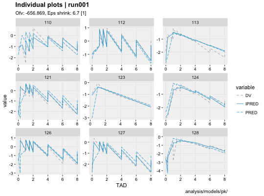
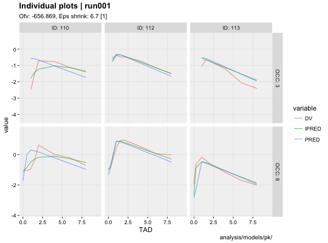

Observations (DV), individual predictions (IPRED) and population predictions (PRED) plotted against the independent variable for every individual
ind_plots(xpdb, mapping = NULL, group = "variable", type = "lp", facets = NULL, title = "Individual plots | @run", subtitle = "Ofv: @ofv, Eps shrink: @epsshk", caption = "@dir", log = NULL, nrow = 3, ncol = 3, page = 1, problem, quiet, ...)
| xpdb | An xpose database object. |
|---|---|
| mapping | List of aesthetics mappings to be used for the xpose plot
(e.g. |
| group | Grouping variable to be used for lines. |
| type | String setting the type of plot to be used points 'p', line 'l', smooth 's' and text 't' or any combination of the four. |
| facets | Either a character string to use facet_wrap or a formula to use facet_grid. |
| title | Plot title. Use |
| subtitle | Plot subtitle. Use |
| caption | Page caption. Use |
| log | String assigning logarithmic scale to axes, can be either '', 'x', y' or 'xy'. |
| nrow | Number of rows per page. |
| ncol | Number of columns per page. |
| page | Page to draw. |
| problem | The $problem number to be used. By default returns the last estimation problem. |
| quiet | Logical, if |
| ... | Any additional aesthetics to be passed on |
Plots can be customized by mapping arguments to specific layers. The naming convention is layer_option where layer is one of the names defined in the list below and option is any option supported by this layer e.g. point_color = 'blue', smooth_method = 'lm', etc.
point: options to geom_point
line: options to geom_line
guide: options to geom_abline
panel: options to facet_wrap (facets is character) or facet_grid
(facets is a formula)
smooth: options to geom_smooth
text: options to geom_text
xscale: options to scale_x_continuous or scale_x_log10
yscale: options to scale_y_continuous or scale_y_log10
Template titles can be used to create highly informative diagnostics plots.
They can be applied to any plot title, subtitle and caption. Template titles
are defined via a single string containing key variables staring with a @ (e.g. @ofv)
which will be replaced by their actual value when rendering the plot.
For example '@run, @nobs observations in @nind subjects' would become 'run001,
1022 observations in 74 subjects'. The available key variables are listed under
template_titles.
# Basic example ind_plots(xpdb_ex_pk)# Example with mapping and facetting ind_plots(xpdb_ex_pk, aes(x = TAD), facets = OCC~ID, panel_labeller = 'label_both')#> #>